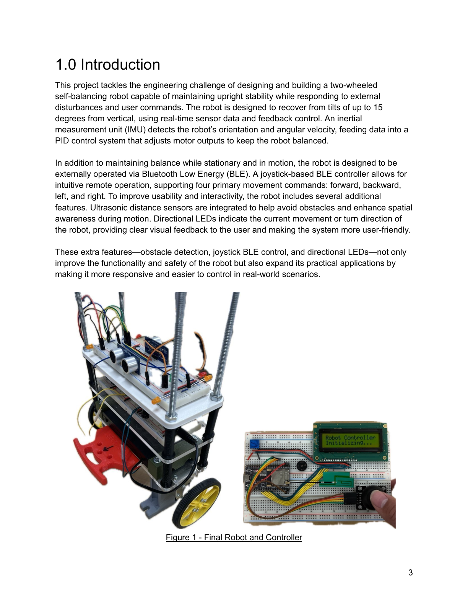
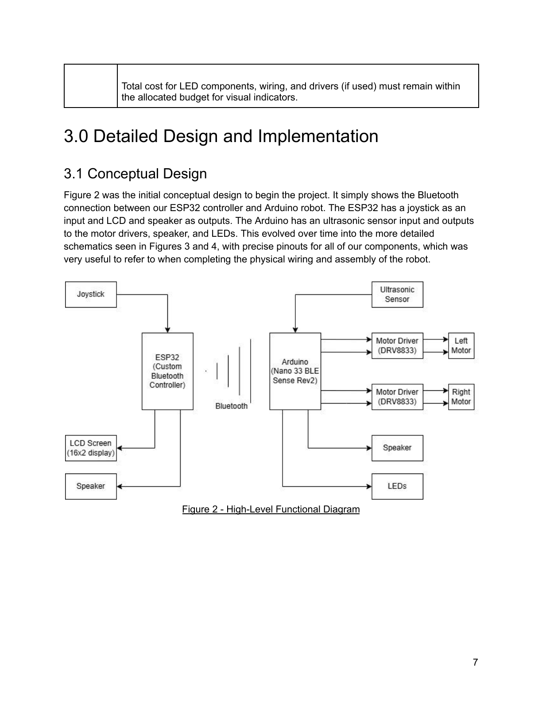
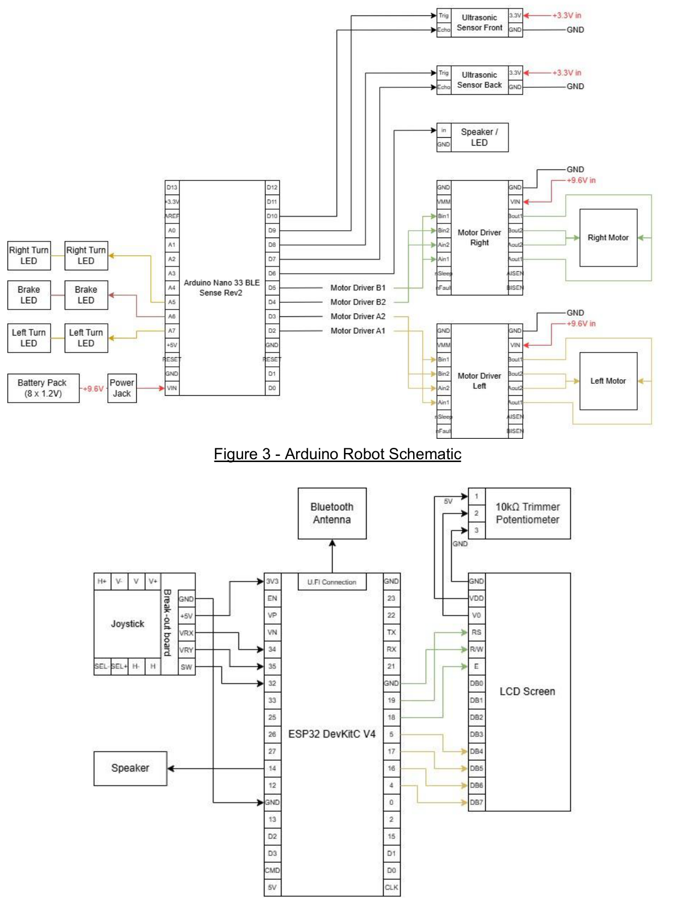
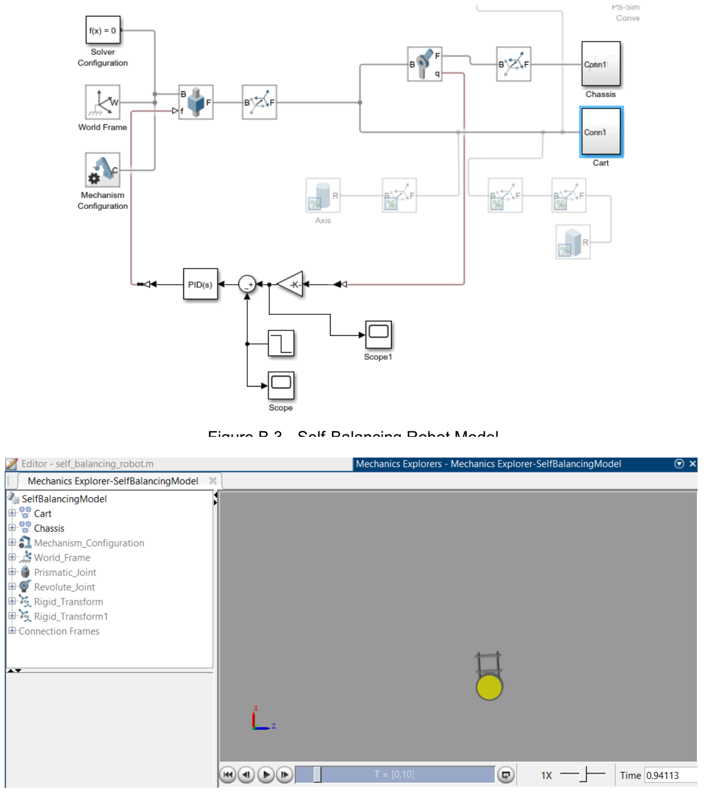
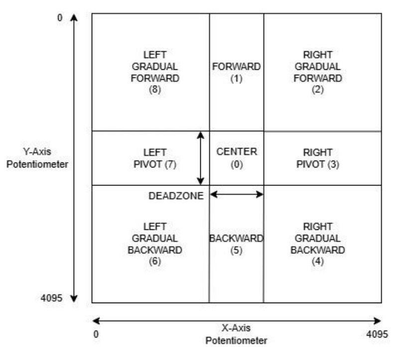
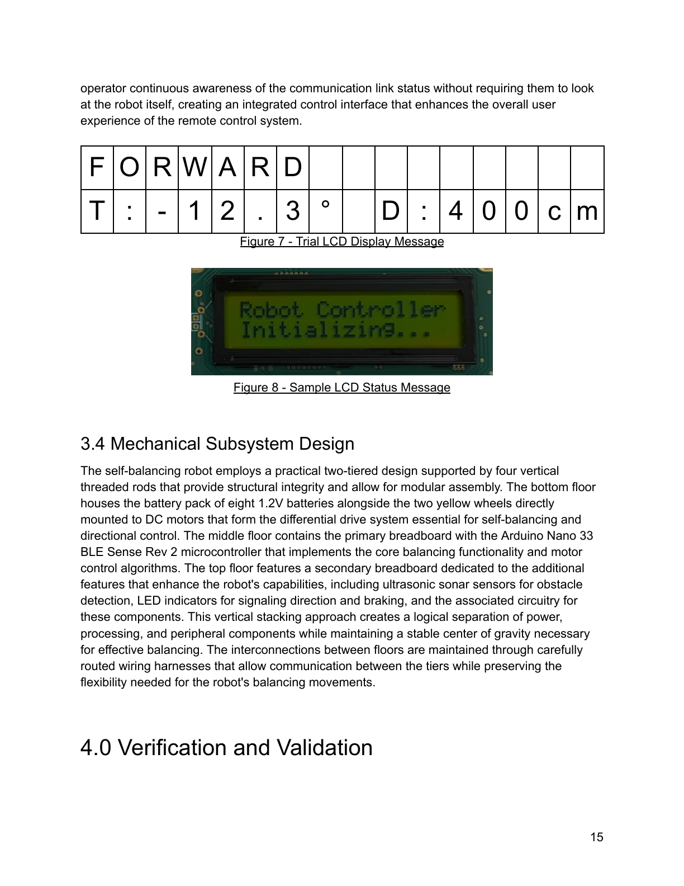
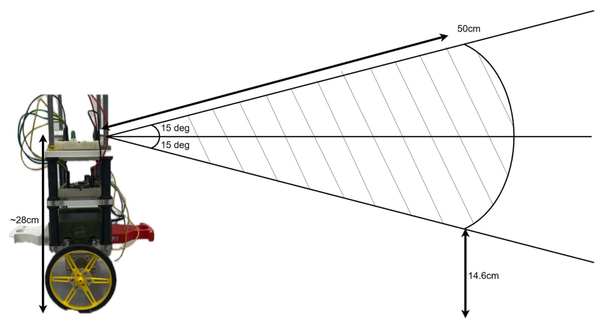

Self-Balancing Robot
This team project developed a two-wheeled self-balancing robot that actively corrects its tilt while responding to wireless driving commands. An Arduino Nano 33 BLE Sense Rev2 reads inertial sensor data and drives two DC motors through a PID feedback controller. A separate ESP32 joystick controller communicates over Bluetooth Low Energy (BLE) and displays live robot telemetry.
The system also integrates front and rear ultrasonic sensing, proximity alerts, and directional LEDs. The design brings together feedback control, motor electronics, embedded communication, and mechanical assembly in a single working prototype.

The Arduino Nano 33 BLE Sense Rev2 serves as the onboard controller, combining IMU readings, balance computation, motor actuation, obstacle sensing, and LED outputs. The ESP32 remote reads a two-axis joystick and button, transmits direction commands, and receives tilt and distance telemetry for a 16×2 character LCD.
The robot runs on eight rechargeable 1.2 V cells in series, providing approximately 9.6 V to the robot platform. The remote is powered separately over USB. The design uses decoupling capacitors around the motor supply to reduce switching noise and voltage disturbances.


The balancing loop combines accelerometer and gyroscope measurements from the BMI270 IMU using a complementary filter to estimate tilt. A PID controller converts the orientation error into motor PWM commands. A Simulink model provided initial tuning values, followed by physical testing using an iterative, Ziegler–Nichols-inspired approach.
Physical tuning settled around Kp = 8.0, Ki = 95.0, and Kd = 0.35. The proportional term responds to tilt, derivative action damps oscillation, and integral action helps correct persistent bias and drift.
Motor response was improved using parallel DRV8833 driver stages. The observed minimum PWM needed to start rotation decreased from approximately 15–20% to 10%. Changing the motor drive from fast decay to slow decay further improved low-speed braking and positional stability.

The ESP32 joystick controller uses a dead zone around its calibrated center position to avoid accidental movement commands. It supports forward, backward, pivot turns, and diagonal movements. A custom BLE service separates direction commands from tilt-angle and ultrasonic-distance telemetry, with commands transmitted at approximately 50 ms intervals.
The 16×2 LCD shows the selected direction, measured tilt, proximity distance, and Bluetooth connection status. Directional LEDs on the robot and an audible proximity warning provide additional operator feedback.


Two HC-SR04 ultrasonic sensors detect obstacles and support automatic deceleration when an object is within approximately 0.5 m. Early testing revealed that the blocking pulseIn() function disrupted BLE communications and competed with the timing-sensitive balance loop.
The sensing routine was redesigned as a non-blocking state machine with staggered ultrasonic triggers, echo timeouts, and asynchronous distance updates. Speaker alerts also run without blocking, increasing their repetition rate as obstacles approach. The report identifies a detection limitation for low obstacles outside the sensors’ vertical field of view.

Verification showed that the robot maintained balance during motion and completed 45° and 90° turns. It recovered from disturbances of approximately ±10°, below the original ±15° target. During stationary balancing, oscillation stayed within roughly ±2 cm and positional drift was below 1 cm/s.
The BLE link remained reliable beyond 25 m, substantially exceeding the initial 5 m test requirement. Ultrasonic distance measurements were accurate to approximately ±0.5 cm in validation tests. Obstacle-triggered braking worked, but stopping could introduce drift or larger oscillations; starting and stopping remote movement could also produce transient oscillations.
This project highlighted how much practical control performance depends on details beyond the mathematical controller. Motor dead zones, PWM decay modes, sensor noise, power delivery, and mechanical balance all influenced whether the robot could hold position reliably.
It also reinforced the importance of designing embedded software around timing constraints. Replacing blocking sensor calls with non-blocking state machines allowed wireless communication, obstacle sensing, and balancing to operate together without interrupting the most critical feedback loop. Simulation was valuable as a starting point, but systematic hardware testing ultimately determined the working design.